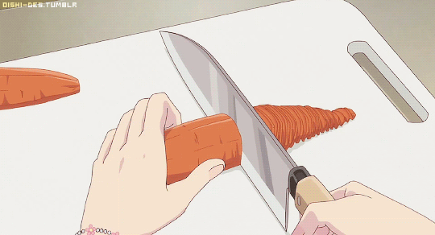
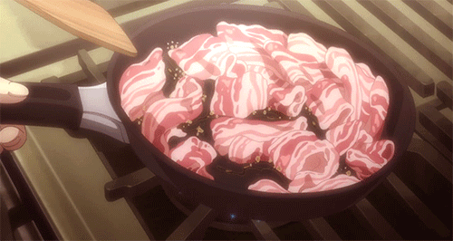

Memasak adalah kegiatan menyiapkan makanan untuk dimakan dengan cara memanaskan pada bahan makanan agar bahan makanan tersebut bisa dikonsumsi. Memasak terdiri dari berbagai macam metode, teknik, peralatan, dan kombinasi bumbu dapur untuk mengatur rasa memudahkan makanan untuk dicerna dan mengubah makanan dari segi warna, rupa, rasa, tekstur, penampilan dan nilai nutrisi.
|
|  |
|  |
|---|
⭐ Menggoreng, yaitu mengolah makanan dengan cara memasukkan bahan makanan ke dalam minyak panas.
⭐ Merebus, yaitu mengolah bahan makanan dengan merendam bahan atau masakan ke dalam air yang panas.
⭐ Mengukus, yaitu memasak dengan menggunakan uap air dan menggunakan alat seperti kukusan, dandang, panci, dan lain-lain.
⭐ Menumis, yaitu memasak dengan menggunakan sedikit minyak olahan dan ditambah sedikit cairan sehingga sedikit berkuah/basah.
⭐ Membakar, yaitu memasak secara langsung di atas bara api, biasanya teknik ini disebut memanggang.
⭐ Memanggang dengan oven (bake), yaitu memasak makanan dengan memasukkan ke dalam alat pembakaran seperti oven dan Oven mikrogelombang dan alat lainya.
⭐ Menyangrai, yaitu memasak di wajan tanpa air maupun minyak goreng, tetapi langsung tersentuh dengan wajan, ada juga yang menggunakan media pasir untuk menyangrai.